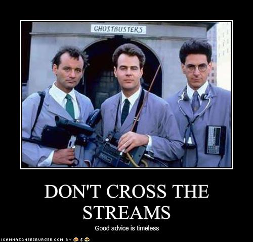

- Omni Adams
- @omnicolor
- http://omni-spot.blogspot.com
- omni@digitaldarkness.com
- 1st, a little about me
- my name is
- find me on the twitter
- check out my blog
- feel free to email me
- This slide will be repeated at the end of this session
- And I will put the slides up somewhere as well
- a few things about this talk
- I try to be funny, it's okay to laugh
- If you're easily offended
- Feel free to ask questions
- Don't be scared by the number in the lower right
Lazy development
- I specialize in lazy development
- What is lazy development you ask?

- Lazy development lets you stop wasting time
- get back to what's important
- like petting your cat
- or taking a nap
- Phing lets me work hard only once for each task
- Then I let the computer repeat that task
- It turns out that computers are much better at repetition
Stay DRY
- Hopefully you've heard DRY
- Don't repeat yourself
- Lemme say that again
- DO NOT REPEAT YOURSELF
- If you find yourself looking up command line flags
- even twice, it's a candidate for automation

- Start small with phing
- Choose something you do all the time
- I assume you're all writing tests...
- You are all writing tests, right?
- If not, you better be in Chris Hartjes later today
<?xml version="1.0" encoding="UTF-8"?>
<project name="phing-the-things" default="test">
<target name="test">
<exec executable="phpunit" passthru="true"
checkreturn="true" />
</target>
</project>
- So we'll start with getting phing to run phpunit
- Here's a really simple build.xml file
- Your most basic phing building block is the target
- Targets do things
- ... or do logic
- ... or set variables (which we'll get to)
- In this case the target calls one task: exec
- That calls the phpunit executable
<?xml version="1.0" encoding="UTF-8"?>
<project name="phing-the-things" default="test">
<target name="test">
<exec executable="phpunit" passthru="true"
checkreturn="true" />
</target>
</project>
- First, we have the standard XML stuff
- phing is all enterprisey and uses XML
- Hey, it could be worse, it could be java
- Phing is a pretty close port of Apache ANT, which uses XML
<?xml version="1.0" encoding="UTF-8"?>
<project name="phing-the-things" default="test">
<target name="test">
<exec executable="phpunit" passthru="true"
checkreturn="true" />
</target>
</project>
- And you have the project tags that surround your tasks
- I'll leave these out of the future slides
<?xml version="1.0" encoding="UTF-8"?>
<project name="phing-the-things" default="test">
<target name="test">
<exec executable="phpunit" passthru="true"
checkreturn="true" />
</target>
</project>
- Then the actual target tag
- We'll cover this more in depth as well later
- For now, know that the name is what you use to call it with
<?xml version="1.0" encoding="UTF-8"?>
<project name="phing-the-things" default="test">
<target name="test">
<exec executable="phpunit" passthru="true"
checkreturn="true" />
</target>
</project>
- Finally, the exec tag that actually does the work
- This is called a task in phing terminology
- There are a bunch of fancy tasks pre-written
- You can write new ones
- exec is a very powerful task if you're CLI-inclined
- I'll show some more complicated execs later
- There is a phpunit task, but it is pretty limited
phing-the-things$ phing test
Buildfile: /Users/Omni/phing-example/build.xml
[property] Loading /Users/Omni/phing-example/build.properties
phing-example > test:
PHPUnit 3.7.13 by Sebastian Bergmann.
Configuration read from /Users/Omni/phing-example/phpunit.xml
..............................
Time: 0 seconds, Memory: 7.25Mb
OK (30 tests, 52 assertions)
BUILD FINISHED
Total time: 0.3155 seconds
- Now, if you type phing test it will run your task
- and hopefully you'll get some pretty success messages
F.............................
Time: 0 seconds, Memory: 7.25Mb
There was 1 failure:
1) GitTest::testGetCommitInfo
LOL cats have clogged the tubes!
/Users/Omni/phing-example/tests/GitTest.php:51
FAILURES!
Tests: 30, Assertions: 51, Failures: 1.
Execution of target "test" failed for the following reason: /Users/Omni/phing-example/build.xml:102:46: Task exited with code 1
BUILD FAILED
/Users/Omni/phing-example/build.xml:102:46: Task exited with code 1
Total time: 0.5653 seconds
- If you have a failing test, you'll get something more like this
- Notice that it tells you the exit code
- For those of you not familiar with exit codes
<?xml version="1.0" encoding="UTF-8"?>
<project name="phing-the-things" default="test">
<target name="test">
<exec executable="phpunit" passthru="true"
checkreturn="true" />
</target>
</project>
- Note that there's a default attribute on your project
- If you just run phing from the command line
- without any arguments, this is what it will run
- I never do this, but phing will complain if default isn't set
<?xml version="1.0" encoding="UTF-8"?>
<project name="phing-the-things" default="test">
<target name="test">
<exec executable="phpunit" passthru="true"
checkreturn="true" />
</target>
</project>
- Remember that checkreturn attribute earlier?
- Here's what happens if you leave it off
- Or you set it to false
F.............................
Time: 0 seconds, Memory: 7.25Mb
There was 1 failure:
1) GitTest::testGetCommitInfo
LOL cats have clogged the tubes!
/Users/Omni/phing-example/tests/GitTest.php:51
FAILURES!
Tests: 30, Assertions: 51, Failures: 1.
BUILD FINISHED
Total time: 0.5619 seconds
- The PHPunit task should fail a build if it fails
- Here you can see the tests failed, but the build passed
- The phpunit task fails the build, but the exec doesn't
-
So if you have to add this extra attribute to get sane behavior...
- There are some places where you might not want to fail the build
- like building documentation for example
- The phpunit task is limited in what you can configure
- strict
- colors
- groups
- command line flags
- Here's some things that the phpunit task doesn't seem to support
- strict for catching tests with no assertions
- colors for prettier output
- groups for targetting tests
- and command line flags for changing behavior at run time
- If you don't care about these, use the real task
<target name="test">
<exec executable="phpunit" passthru="true"
checkreturn="true">
<arg value="--exclude-group=integration" />
</exec>
</target>
- One argument I like to be able to include
- exclude-group (or include-group)
- Lets you target tests with @group annotations
- So you can organize your tests a bit
- Like smoke, integration, selenium, or whatever
<target name="test">
<exec executable="phpunit" passthru="true"
checkreturn="true">
<arg value="${phpunitFlag}" />
</exec>
</target>
- Another that's pretty helpful is a flag
- This lets you modify phpunit behavior while running phing
- to run just a single test file for example

- Variables are called properties in Phing
- There's a few ways of setting them
<property name="phpunitFlag" value="--group=smoke" />
<property name=""outputDir" value="./docs" />
- One way is with a property line in your build file
- This is useful for setting paths to things
- For example, you can default a path to a sane value
- but allow other developers to easily override it if needed
- We'll get into how a little later
phing-the-things$ phing test -DphpunitFlag=--group=smoke
Buildfile: /Users/Omni/phing-example/build.xml
[property] Loading /Users/Omni/phing-example/build.properties
phing-example > test:
PHPUnit 3.7.13 by Sebastian Bergmann.
Configuration read from /Users/Omni/phing-example/phpunit.xml
........
Time: 0 seconds, Memory: 7.25Mb
OK (8 tests, 12 assertions)
BUILD FINISHED
Total time: 0.1058 seconds
- Another way is from the command line
- Yeah, it's ugly
- That's the Java heritage for you
composer=/opt/composer.phar
server1.user=oadams
server1.url=www.example.lan
<property file="build.properties" />
<target name="properties-example">
<exec executable="${composer}" />
<exec executable="ssh" passthru="true">
<arg value="-t" />
<arg value="${server1.user}@${server1.url}" />
<arg value="sudo /sbin/service httpd restart" />
</exec>
</target>
- Another way of setting properties is build.properties
- Simple name equals value text file
- Probably should be ignored in your source control
- At the top you see an example build.properties
- Each of these are usable in your build file
- This first exec shows how to set where your composer.phar is
-
The second shows using a user and hostname to restart apache with
SSH
- We'll get more into this sort of advanced magic later
first
things
first
- One thing that can easily trip you up
- Properties are mostly immutable
- except when they're not
- There are a few exceptions to this rule, and we'll get to those
# build.properties
foo=test
bar=test
<property name="foo" value="bar" />
<property file="build.properties" />
<property name="mitz" value="fah" />
- If you don't put your build.properties file first, it doesn't
-
So in this case, you might think build.properties sets both to test
- But the foo property has already been set, so it is still 'bar'
- While the mitz value is set to 'test'
- This does let you control which variables can be overridden
- If you set some before build.properties is included, they're set
- Those set after it's included can be changed by the user

- Any of y'all use PHP code sniffer?
- It's a tool that sniffs your code to find possible problems
-
If you use any third-party libraries, your phpcs may have irrelevant
warnings
- One way to fix that is with filesets
<patternset id="files">
<include name="**/*.php" />
<exclude name="third-party/**" />
<exclude name="vendor/**" />
</patternset>
<target name="phpcs">
<phpcodesniffer standard="./coding_rules.xml" format="full"
showWarnings="true">
<fileset dir=".">
<patternset refid="files" />
</fileset>
</phpcodesniffer>
</target>
- Here we define a patternset and call it files
- include everything in our project directory that ends in php
- exclude everything in 3rd-party and any composer...
- The fileset used in phpcs references the patternset we defined
- Very useful in this use case so you can run static...
- Most of the tools Germans write to say you're doing it wrong...
- This avoids running it on dependencies you don't maintain
- since composer dependencies might all use a different style

- Then there's documentation...
- Anyone use PHPdoc to document their code?
<target name="document" depends="require-docdir">
<mkdir dir="${docdir}/api" />
<exec executable="phpdoc" passthru="true">
<arg value="--directory=." />
<arg value="--ignore=vendor/*" />
<arg value="--ignore=src/*" />
<arg value="--progressbar" />
<arg value="--target=${docdir}/api" />
<arg value="--title=API documentation" />
</exec>
</target>
- Again, there is a phpdocumentor2 task that does this natively
- But I want to talk about a few things here
- This is as good a task to use for some examples, right?
<target name="document" depends="require-docdir">
<mkdir dir="${docdir}/api" />
<exec executable="phpdoc" passthru="true">
<arg value="--directory=." />
<arg value="--ignore=vendor/*" />
<arg value="--ignore=src/*" />
<arg value="--progressbar" />
<arg value="--target=${docdir}/api" />
<arg value="--title=API documentation" />
</exec>
</target>
- First, note that you can do more than one thing in a target
-
Here, we're building documentation after we create a new directory
- You can add any number of tasks to a build target
-
But obviously, you should refactor your build like any other code
- and keep your targets short and easy to read and understand
<target name="document" depends="require-docdir">
<mkdir dir="${docdir}/api" />
<exec executable="phpdoc" passthru="true">
<arg value="--directory=." />
<arg value="--ignore=vendor/*" />
<arg value="--ignore=src/*" />
<arg value="--progressbar" />
<arg value="--target=${docdir}/api" />
<arg value="--title=API documentation" />
</exec>
</target>
- Second, notice how we pass in arguments to our exec call
- Everything in the arg value is actually quoted
- The upshot of this is that you can have spaces
- For example → you don't need
<target name="document" depends="require-docdir">
<mkdir dir="${docdir}/api" />
<exec executable="phpdoc" passthru="true">
<arg value="--directory=." />
<arg value="--ignore=vendor/*" />
<arg value="--ignore=src/*" />
<arg value="--progressbar" />
<arg value="--target=${docdir}/api" />
<arg value="--title=API documentation" />
</exec>
</target>
- you don't need to do anything special for the title here
- It just works
- The downside → is that
<exec executable="ps" outputProperty="ps-output">
<arg value="x" />
<arg value="|" />
<arg value="grep" />
<arg value="selenium" />
<arg value="|" />
<arg value="grep" />
<arg value="-v" />
<arg value="grep" />
<arg value="|" />
<arg value="grep" />
<arg value="-v" />
<arg value="phing" />
</exec>
- ... is that if you want to string together a bunch of commands
- it very rapidly looks ugly
- In case you're wondering,
- snippet tries to check to see if selenium is running
- and sets a property called ps-output
- We'll get into that a bit more later as well
<exec executable="ps" outputProperty="ps-output">
<arg line="x | grep selenium | grep -v grep | grep -v phing" />
</exec>
-
There's also arg line, which in this case is a bit easier to read
- With arg line you do have to quote any parameters with spaces
- Also, note that you can't mix arg line and arg value
- unlike crossing → the streams

- the streams ... which is bad unless it's good
- mixing arg line and arg value just doesn't work
- Let's talk about dependencies
- Phing allows targets to depend on other targets
- This lets you build your project up from smaller parts
- There's two ways of calling another target

- The first is a depends attribute on a target tag
- There's no real limit to how deep you nest these
- So you can have a target depending on a target
- That depends on other targets
- And so on
-
Though you do need to worry about creating an unmaintainable mess
<target name="build" depends="test" />
<target name="coverage-html" depends="require-docdir">
<exec executable="phpunit" passthru="true">
<arg value="--coverage-html=${docdir}/coverage" />
<arg value="${phpunitFlag}" />
</exec>
</target>
- Here's two targets that depend on others
- The first one, "build", doesn't do any work on its own
- The second depends on the require-docdir target
- require-docdir gets run, and it if doesn't fail the build
- Then phpunit is run
- In this case, phpunit is building code coverage
- and writing it where that docdir property tells it to
<target name="require-docdir">
<if>
<not>
<isset property="docdir" />
</not>
<then>
<fail message="docdir isn't set in your build.properties file" />
</then>
</if>
</target>
- Here's that require-docdir target
-
Basically, this is just checking to see if a property is defined
- it can be defined anywhere properties normally get defined
- Either in a property tag or in your build.properties file
- This illustrates that you can have targets that don't do work
-
But they can do logic and fail a build with a descriptive message
<property name="foo" value="bar" />
<target name="example" depends="other-task">
<phingcall target="other-task">
<property name="foo" value="test" />
<property name="baz" value="test" />
</phingcall>
<phingcall target="other-task" />
</target>
<target name="other-task">
<echo message="${foo}" />
<echo message="${baz}" />
</target>
- The other way of calling another task is with phingcall
- The difference between dependencies and phingcall is properties
- If you call this example target it calls other task three times
- The first time is the dependency, where baz is not set
-
Then it calls it with a property set inside, so baz will be set
- Note that foo is changed to test in the second example
- If you read the documentation it makes it sound like this...
- When that call finishes, any of its properties are unset
- So in the third call baz is also unset
- Any of y'all ever use Make to compile stuff?
- One of the neat things about make is that it is lazy
- It only recompiles a binary if one of its source files change
- While in general PHP never compiles stuff,
- There are exceptions
<uptodate property="css-compiled" targetfile="style.css">
<srcfiles dir="styles" includes="**/*less" />
</uptodate>
- Phing uses the uptodate tag to do these conditional tasks
- In this case, it's going to scan the → styles
<uptodate property="css-compiled" targetfile="style.css">
<srcfiles dir="styles" includes="**/*less" />
</uptodate>
- styles directory for any changed files
- only looking for files → with a less
<uptodate property="css-compiled" targetfile="style.css">
<srcfiles dir="styles" includes="**/*less" />
</uptodate>
- extension
- It will look at the modification time on those files
- And compare the most recently modified timestamp
- against → style.css
<uptodate property="css-compiled" targetfile="style.css">
<srcfiles dir="styles" includes="**/*less" />
</uptodate>
- style.css
- If style.css is newer than all of the source files
- it sets a → property
<uptodate property="css-compiled" targetfile="style.css">
<srcfiles dir="styles" includes="**/*less" />
</uptodate>
- property called css-compiled
<uptodate property="css-compiled" targetfile="style.css">
<srcfiles dir="styles" includes="**/*less" />
</uptodate>
<target name="compile-css" unless="css-compiled">
<exec executable="lessc" passthru="true" checkreturn="true">
<arg value="-x" />
<arg value="styles/*.less" />
<arg value="style.css" />
</exec>
</target>
- Targets can use that property along with the unless attribute
- to decide not to run
- In this case, if you edit one of the less files
- and run the compile-css target, it will run less on them
- If we're up to date, it does nothing

- Anyone *not* using composer?
<available property="composer-exists" file="composer.phar" />
<target name="get-composer" unless="composer-exists">
<exec executable="curl" output="composer.php">
<arg value="-sS" />
<arg value="https://getcomposer.org/installer" />
<arg value="|" />
<arg value="php" />
</exec>
<chmod file="composer.phar" perm="664" />
</target>
- Here's a target that will download composer
- but only if it hasn't already been downloaded
- The available property looks for the file
- and sets a composer-exists property if it exists
<available property="composer-exists" file="composer.phar" />
<target name="get-composer" unless="composer-exists">
<exec executable="curl" output="composer.php">
<arg value="-sS" />
<arg value="https://getcomposer.org/installer" />
<arg value="|" />
<arg value="php" />
</exec>
<chmod file="composer.phar" perm="664" />
</target>
- The get-composer target checks the composer-exists property
- to decide if it's going to run or not

- Finally, let's talk about deploying software to a server
- We're going to do this in a relatively platform-agnostic way
- So no RPMs or debs
- If your server system is sane, this should work
- If you're on Windows, I can't really help
assumptions
- First, some assumptions
- so we don't make asses of ourselves
- We want to do most deploys with no downtime
- We want to be able to rollback quickly
- We're using git for version control
- In order to deploy with no real downtime
- we need to be able to switch between versions quickly
- To do that, we'll use symlinks
- it takes almost no time to create a symlink
- compared to moving directories around, which can
- so Apache needs to be configured to follow them

- You want to be secure, so I'll use scp
- I'm going to assume that you've got SSH keys set up
- And if you're suitable lazy, a good SSH config file
- If you're still typing your password to log in
- You're doing it wrong
<target name="tag" depends="require-version">
<gittag annotate="true" name="${version}" repository="."
message="Tagged version ${version}" />
<gitpush repository="." tags="true" quiet="true" />
</target>
- require-version here is similiar to the require-docdir task
- Assuming you install phing with VersionControl_Git depend...
- This will tag the repository with the git tag you specify
- And push it up to your remote repository
- You can use whatever you want for version here
- like 1.2.3 or 'Return of the Jedi', it doesn't matter
phing-the-things$ phing tag
Buildfile: /Users/Omni/Sites/phing/build.xml
[property] Loading /Users/Omni/Sites/phing/build.properties
phing-the-things > require-version:
[if] Error in IfTask
Execution of target "require-version" failed for the following reason: /Users/Omni/Sites/phing/build.xml:146:12: /Users/Omni/Sites/phing/build.xml:150:18: You must pass in a version: -Dversion=1.2.3
BUILD FAILED
/Users/Omni/Sites/phing/build.xml:146:12: /Users/Omni/Sites/phing/build.xml:150:18: You must pass in a version: -Dversion=1.2.3
Total time: 1.5921 second
- Here's what you might see if you don't include the version
- You can see the build failed, and there's a message
- Saying that you must include the version parameter
phing-the-things$ phing tag-no-version
Buildfile: /Users/Omni/Sites/phing/build.xml
[property] Loading /Users/Omni/Sites/phing/build.properties
phing-the-things > tag-no-version:
[gittag] git-tag command: /usr/bin/git tag -a -m'Tagged version ${version}' '${version}'
[gittag] git-tag: tags for "." repository
[gittag] git-tag output:
BUILD FINISHED
Total time: 0.2039 seconds
phing-the-things $ git tag
${version}
- I feel like this is much better than tagging with garbage
- Here's what happens if you tag without passing in a version
- And you don't check to see if version is passed in
- It doesn't fail, but it does put in a garbage tag
<target name="tag-version">
<version releasetype="${release}" file="version.txt" property="version" />
<exec executable="git" passthru="true">
<arg line="add version.txt" />
</exec>
<exec executable="git" passthru="true">
<arg line="commit -m 'Updated version file to ${version}'" />
</exec>
<gittag annotate="true" name="${version}" repository="."
message="Tagged version ${version}" />
</target>
- Phing supports automagic incrementing versions
- with the version tag
- The version tag takes three attributes
- The first is → releasetype
<target name="tag-version">
<version releasetype="${release}" file="version.txt" property="version" />
<exec executable="git" passthru="true">
<arg line="add version.txt" />
</exec>
<exec executable="git" passthru="true">
<arg line="commit -m 'Updated version file to ${version}'" />
</exec>
<gittag annotate="true" name="${version}" repository="."
message="Tagged version ${version}" />
</target>
- release type
- This can be Major, Minor, or BugFix
<target name="tag-version">
<version releasetype="${release}" file="version.txt" property="version" />
<exec executable="git" passthru="true">
<arg line="add version.txt" />
</exec>
<exec executable="git" passthru="true">
<arg line="commit -m 'Updated version file to ${version}'" />
</exec>
<gittag annotate="true" name="${version}" repository="."
message="Tagged version ${version}" />
</target>
- The file attribute names a file that holds the current version
- The version number must be in major dot minor dot patchlevel
- The file either needs to be in your source control
- and thus updated every release
- or ignored and then you can get out of sync really easy
<target name="tag-version">
<version releasetype="${release}" file="version.txt" property="version" />
<exec executable="git" passthru="true">
<arg line="add version.txt" />
</exec>
<exec executable="git" passthru="true">
<arg line="commit -m 'Updated version file to ${version}'" />
</exec>
<gittag annotate="true" name="${version}" repository="."
message="Tagged version ${version}" />
</target>
- Finally, there's the property attribute
- The version that gets incremented is stored in this property
- You can then use it for whatever you want
<target name="tag-version">
<version releasetype="${release}" file="version.txt" property="version" />
<exec executable="git" passthru="true">
<arg line="add version.txt" />
</exec>
<exec executable="git" passthru="true">
<arg line="commit -m 'Updated version file to ${version}'" />
</exec>
<gittag annotate="true" name="${version}" repository="."
message="Tagged version ${version}" />
</target>
- After the version file gets updated, we stage it and commit it
- Then tag our repository
phing-the-things$ phing tag-version -Drelease=minor
Buildfile: /Users/Omni/Sites/phing/build.xml
[property] Loading /Users/Omni/Sites/phing/build.properties
phing-the-things > tag-version:
[master 4b48e9f] Updated version file to 0.1.0
1 file changed, 1 insertion(+), 1 deletion(-)
[gittag] git-tag command: /usr/bin/git tag -a -m'Tagged version 0.1.0' '0.1.0'
[gittag] git-tag: tags for "." repository
[gittag] git-tag output:
BUILD FINISHED
Total time: 0.3507 seconds
phing-the-things $ git tag
0.0.1
0.1.0
- Here's what the output might look like
- I'm updating the minor version from 0.0.1
- Phing figures out that the next minor version is 0.1.0
<target name="release-major">
<phingcall target="tag-version">
<property name="release" value="major" />
</phingcall>
</target>
<target name="release-minor">
<phingcall target="tag-version">
<property name="release" value="minor" />
</phingcall>
</target>
- If you don't want to pass things in on the command line
- setting up full targets to do these sorts of things is easy
- But I'm going to stick with command line arguments
<target name="tag-svn">
<svncopy svnpath="${svnpath}" username="${svnuser}"
password="${svnpass}" nocache="true"
repositoryurl="svn://localhost/phing-the-things/trunk/"
todir="svn://localhost/phing-the-things/tags/${version}" />
</target>
- For you Subversive types, here's a similar command for tagging
- Not quite as pretty as gittag
- but most Subversion things aren't as pretty as git counterparts
<target name="tag-version-no-file">
<exec executable="git" outputProperty="latest-version">
<arg line="tag | sort -t. -k 1,1n -k 2,2n -k 3,3n | tail -1" />
</exec>
<echo file="v.txt">${latest-version}</echo>
<version releasetype="${release}" file="v.txt" property="version" />
<delete file="v.txt" />
<gittag annotate="true" name="${version}" repository="."
message="Tagged version ${version}" />
</target>
- Back to git
- Let's say you wanted to be able to use the version task
- But don't want that pesky file hanging out
- This asks git for the most recent tag
- All of that sorting is so you get the highest version
- Since otherwise you get version 1.1.11 being before 1.1.2
- Stores it in version.txt
- Increments the version, deletes the file, and then tags git
- This is really just an example of the complex behavior
- from a few simple primatives
<property name="build-url"
value="https://jenkins/job/phing/lastBuild/api/json?pretty=true" />
<target name="require-green-build-check">
<exec executable="curl" outputProperty="build-status">
<arg line='--silent ${build-url} | grep result | cut -d" -f4' />
</exec>
<if>
<not><equals arg1="${build-status}" arg2="SUCCESS" /></not>
<then><fail message="Jenkins build is broken" /></then>
</if>
</target>
- Here's a fun dependency for your release process
- This uses curl to ask Jenkins if your build is broken
- Broken builds mean you definitely shouldn't release
- And this fails your phing task
- It does some simple command line parsing of the status JSON
- You could do more there, like output the name of who broke it
- Nothing changes the behavior of carbon-based meat popsicles...
<target name="deploy">
<phingcall target="require-release" />
<phingcall target="require-green-build-check" />
<phingcall target="tag-version-no-file" />
</target>
- Here's our deployment task so far
- We require the user to pass in a release
- We require the build to be green
- And we tag the new version
- If I wasn't projecting this I would do it slightly differently
- Both of the require calls would be a depends attribute
- Instead of phingcalls, purely for aesthetic reasons
- Before we deploy, we're going to prepare a tarball
- And instead of just using the current checkout
- We'll get a clean clone and remove some stuff
- There's no reason to upload your unit tests or git directories
<target name="prepare">
<gitclone repository="git://gitserver/repos/phing-the-things.git"
targetPath="build" />
<gitcheckout repository="build" branchname="${version}" quiet="true" />
<delete dir="build/tests" />
<delete file="build/build.xml" />
<tar destfile="build-${version}.tar.bz2" basedir="build"
includeemptydir="true" compression="bzip2" />
<delete dir="build" />
</target>
- Here's a prepare target
- We're going to grab the clean clone first
- This makes sure that we don't deploy any in progress code
- We change over to our newly created tag
- We delete the tests directory and the build file
- Then we tar and compress it
- Finally we delete the build directory
<target name="deploy">
<phingcall target="require-release" />
<phingcall target="require-green-build-check" />
<phingcall target="tag-version-no-file" />
<phingcall target="prepare" />
</target>
- Our updated deployment is starting to take shape
- Already we've made deployments easier and more repeatable
- Your prepare task might also concatenate and minimize
- or compile things
- Whatever you need
<target name="upload">
<exec executable="scp" checkreturn="true">
<arg value="build-${version}.tar.bz2" />
<arg value="${server}:/var/www/" />
</exec>
<exec executable="ssh" checkreturn="true" passthru="true">
<arg value="${server}" />
<arg value="cd /var/www ; tar -xjf build-${version}.tar.bz2" />
</exec>
</target>
- Next we have an upload target
- These use scp to upload the tarball
- and ssh to uncompress it
- There are native SSH and scp tasks, but they require a pecl...
- Note that you can use sudo over ssh if you need to
- You'll want to add the -t argument
- that forces SSH to use a pseudo-TTY so you can enter your pass
- at this point, depending on your app, you can sanity check
<target name="deploy">
<phingcall target="require-release" />
<phingcall target="require-green-build-check" />
<phingcall target="tag-version-no-file" />
<phingcall target="prepare" />
<phingcall target="upload" />
</target>
- We're almost there!
- Now we just need to change our symlinks
- At first you might be tempted to include this in the previous ssh
- I prefer it as a different task to make rollbacks easy
<target name="go-live" depends="require-version">
<exec executable="ssh" checkreturn="true" passthru="true">
<arg value="${server}" />
<arg value="cd /var/www; ln -sf build-${version} app" />
</exec>
</target>
- The final step of deployments
- We ssh to the server again
- and replace the symlink to point to our new version
- Our old deployment is still there, it just isn't linked
- In this case, we assume Apache is pointing a /var/www/app
- Just changing a symlink == instantaneous
<target name="deploy">
<phingcall target="require-release" />
<phingcall target="require-green-build-check" />
<phingcall target="tag-version-no-file" />
<phingcall target="prepare" />
<phingcall target="upload" />
<phingcall target="go-live" />
</target>
- Our final full deployment target
- Lots of small and simple individual targets
sanity
check
- Now you need to sanity check it
- If you've got good smoke tests you can run them now
- otherwise, open up your browser and make sure things are good
- So what if you notice a problem in your shiny new build?
- Since we split the go-live target out from the upload target
- It's really easy to roll back
phing-the-things$ phing go-live -Dversion=1.2.3
- Your go-live target accepts a version number
- So just give it your last known good version
phing-the-things$ phing go-live -Dversion=1.2.3
- This kind of makes it your get out of jail free card
- Omni Adams
- @omnicolor
- http://omni-spot.blogspot.com
- omni@digitaldarkness.com
- Thank y'all
- Any questions?
/